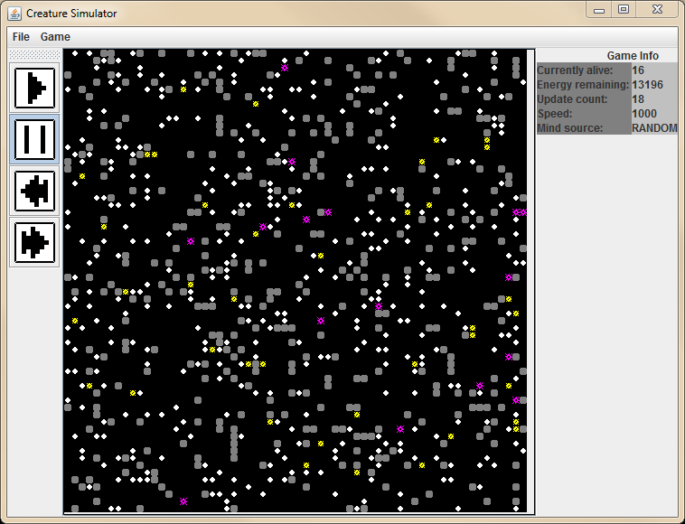

Creature Simulator

I love artificial life systems. I've made a lot of simple programs for playing around with them. When I was learning Java I made the Creature Simulator which functioned a bit like a game with a 2D world where simulated agents could roam around, modify the environment, collect energy, and interact.
I also made several simulators in Processing. Here's one:

Done in high school